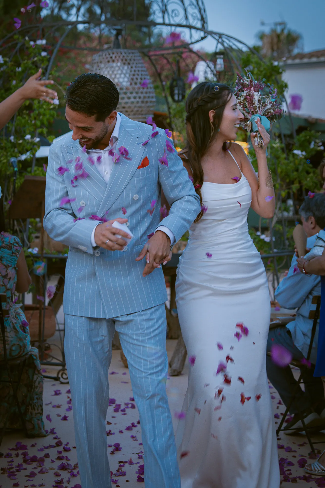
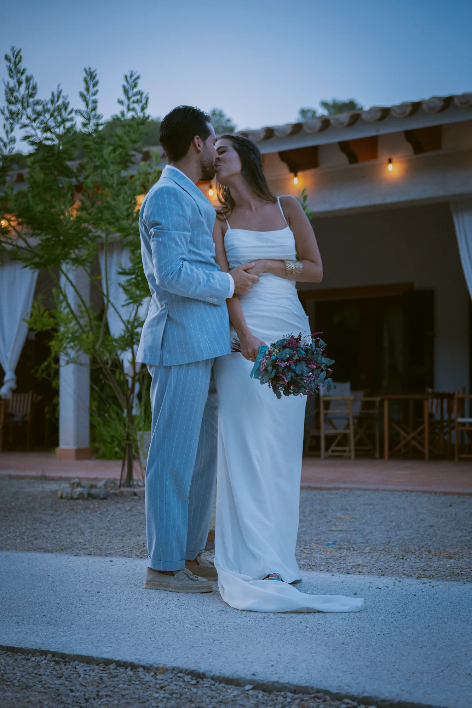
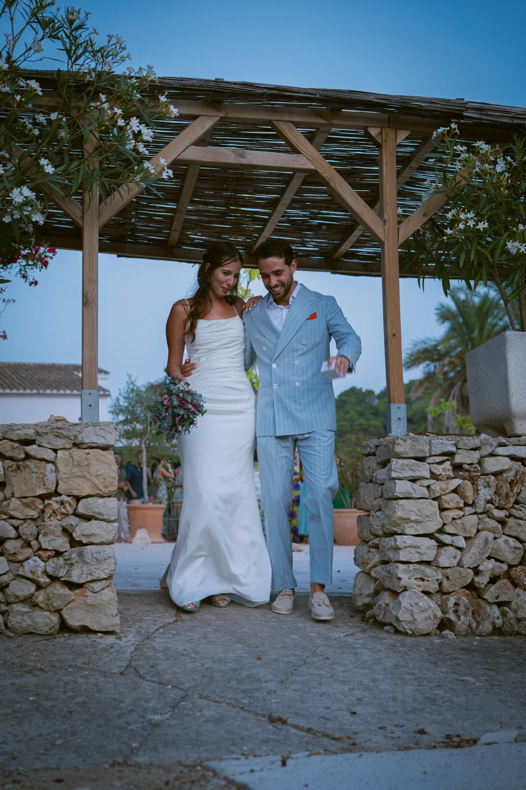

Fotografía documental de bodas
Historias vivas.
Recuerdos eternos.
Menorca · Baleares · Allí donde estéis




La mirada
Cada pareja tiene una historia.
La vuestra merece
ser recordada.
Hablemos de vuestro día
- bodas documentadas
- años contando bodas
- tiempo de respuesta
- valoración de las parejas
Con base en Menorca · Bodas en Baleares y Canarias
Buenas tardes,
mi nombre es
Víctor.
Mi mirada se ha formado en el cine. Los rodajes me han enseñado a leer la luz, cuidar el encuadre y entender el ritmo con el que se construye una historia.
En las bodas, esa forma de mirar se pone al servicio de algo irrepetible.
El día de la boda os doy cuatro indicaciones, dichas con calma y sin entrometerme:
lo justo para conseguir esas fotos que tanto os gustan. A partir de ahí, sois libres. Jugáis, os movéis, os robáis una risa o una mirada. Y ahí es donde entro yo.
Mi mirada se ha formado en el cine. Los rodajes me han enseñado a leer la luz, cuidar el encuadre y entender el ritmo con el que se construye una historia.
En las bodas, esa forma de mirar se pone al servicio de algo irrepetible.
El día de la boda os doy cuatro indicaciones, dichas con calma y sin entrometerme: lo justo para conseguir esas fotos que tanto os gustan.
A partir de ahí, sois libres. Jugáis, os movéis, os robáis una risa o una mirada. Y ahí es donde entro yo.
La experiencia
Habrá momentos que no llegaréis a ver.
Los encontraréis en las fotografías.
No tenéis que saber posar ni estar pendientes de la cámara. Mi trabajo también consiste en daros calma: conocer el ritmo del día, anticiparme y guiaros solamente cuando realmente lo necesitéis.
-
Os escucho y conozco lo importante
Hablamos de vuestra gente, vuestros tiempos y lo que de verdad importa. Las llamadas y videollamadas que hagan falta, y precios claros desde el principio.
-
Preparo el día con vosotros
Conozco el ritmo de la jornada y las localizaciones, y me coordino con el resto de equipos que trabajan en vuestra boda.
-
Os dejo vivirlo; guío solo si ayuda
Si necesitáis una indicación, la tendréis. Cuando el momento funcione solo, me apartaré. Sin poses forzadas ni sesiones que os alejen de vuestra boda.
-
Si algo cambia, me adapto
Los nervios, la luz y los horarios no siempre siguen el plan. Resuelvo sin añadir ruido y sigo encontrando la historia dentro de lo inesperado.
-
Selecciono y edito cada fotografía
Construyo un relato visual coherente y fiel a vuestro día, y os lo entrego en una galería online privada.
Palabras bonitas
Lo que dicen las parejas
-
★★★★★
«Nos has hecho reír, llorar y volver a sentirlo todo otra vez. No queríamos unas fotos bonitas: queríamos exactamente esto.»
-
★★★★★
«Llevamos como una hora diciendo “esta es mi favorita”. Tenemos ya unas 200 favoritas.»
-
★★★★★
«No puedo con las fotos de nuestros amigos. Son ellos, literal. Los has pillado a todos tal cual son.»
Inversión
Bodas documentadas
desde 900 €.
La cifra final depende de la fecha, la duración del acompañamiento y la localización. Sin costes ocultos ni sorpresas: lo cerramos juntos, con total claridad.
- Completa
- Hasta 9 horas. La historia completa del día, desde los preparativos hasta el comienzo de la fiesta.
- Signature
- Hasta 12 horas, con sesión preboda o postboda y entrega prioritaria.
- A vuestra medida
- Álbum fine art, segundo fotógrafo y entrega exprés. La cobertura se adapta a vuestra boda en Baleares o Canarias.
Precios sin IVA
Preguntas
Antes de reservar,
resolvemos las dudas.
Si os queda alguna pregunta, escribidme. Os responderé personalmente.
¿Tenemos que saber posar?
No. Os daré indicaciones sencillas cuando ayuden y dejaré espacio para que os mováis y disfrutéis con naturalidad.
¿Dónde trabajas?
Tengo mi base en Menorca y fotografío bodas en todas las Baleares y en Canarias.
¿Cómo comprobamos si estás disponible?
Contadme la fecha, el lugar, el número aproximado de invitados y la cobertura que os gustaría; a partir de ahí seguimos hablando para concretar la propuesta.
¿Cuánto cuesta?
Desde 900 €. La cifra final depende de la fecha, la duración y el lugar de vuestra boda, y la cerramos juntos antes de reservar.
¿Qué pasa si cambia el ritmo del día?
Me adapto a los cambios de luz y de horarios para seguir documentando lo que sucede, sin añadir presión a la jornada.
¿Cuándo y cómo recibimos las fotografías?
Preparo una selección cuidada de vuestra historia y os la entrego en una galería online privada. El plazo os lo confirmo en la propuesta, según cada boda.
¿Cómo se reserva la fecha?
Hablamos, cerramos los detalles de la propuesta y, cuando estéis conformes, bloqueo el día. Os cuento las condiciones concretas en ese momento.
El siguiente paso
Si estas imágenes os han hecho sentir algo,
Hagamos que
permanezca.
Cuatro preguntas breves y seguimos por WhatsApp. Os escribo yo, no una plantilla. Sin compromiso.
Contadme vuestra bodaMenos de un minuto · Respuesta personal